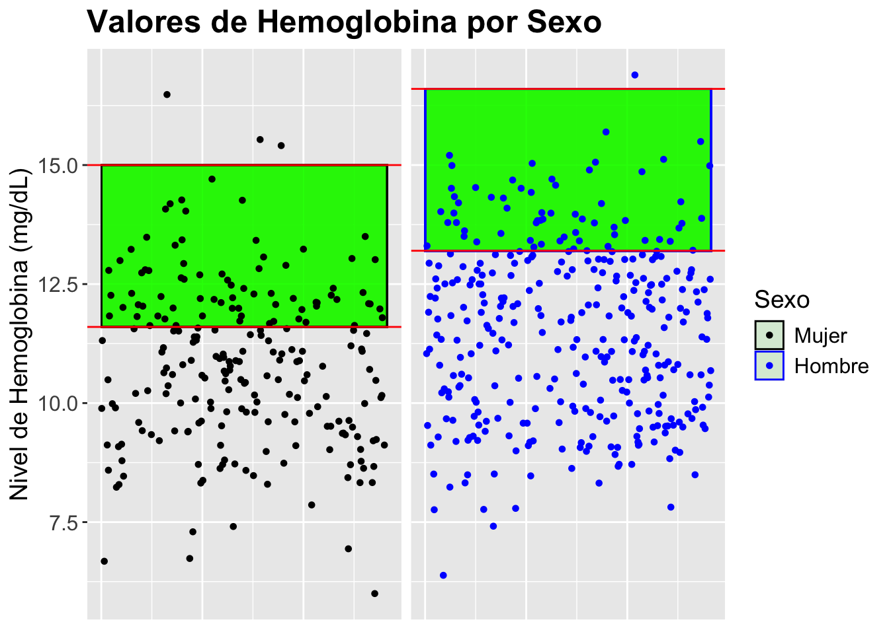

# A tibble: 6 × 23
`original order` PATID PROT AGE SEX RACE ISOTYPE B2M CRP CREAT LDH
<dbl> <dbl> <chr> <dbl> <chr> <chr> <chr> <dbl> <dbl> <dbl> <dbl>
1 1 8241 TT2 53.4 fema… white IgG 1.8 8.6 0.6 149
2 2 9843 TT2 52.7 fema… white IgG 1.7 8.9 0.6 144
3 3 9888 TT2 62.0 male white Nonsec… 5.5 4.5 0.8 113
4 4 9835 TT2 60.3 male white IgA 2.8 9.9 1 102
5 5 9997 TT2 66.9 male white IgG 4 2.6 1.2 194
6 6 9992 TT2 55.3 fema… white IgA 2.9 2.1 1 146
# ℹ 12 more variables: ALB <dbl>, HGB <dbl>, ASPC <chr>, BMPC <chr>, MRI <dbl>,
# CPS1 <dbl>, CPR1 <dbl>, EFS_Censor <dbl>, EFS_Time <dbl>, OS_Censor <dbl>,
# OS_Time <dbl>, Cyto_Abn <dbl>Análisis del Impacto del Mieloma Múltiple en los Niveles de Hemoglobina
Datos
Los datos han sido aportados por el profesor del TFG. Se trata de una base de datos formada por pacientes con Mieloma Múltiple. El estudio de estos ha sido realizado por Marc Arrom Esquembre. El enlace al repositorio es el siguiente: https://github.com/MarcArrom11/AD_Entrega1
Resumen
En este documento, se analiza un conjunto de datos compuesto por individuos diagnosticados con Mieloma Múltiple, con el propósito de evaluar cómo esta enfermedad puede influir en los niveles de hemoglobina. Utilizando datos recopilados, se examina la proporción de pacientes que presentan niveles de hemoglobina fuera del rango normal establecido. Los resultados indican que un significativo porcentaje de los pacientes con Mieloma Múltiple muestra alteraciones en sus niveles de hemoglobina. Específicamente, hemos observado que el 65.9% de las mujeres y el 80.5% de los hombres se encuentran fuera de los rangos normales de hemoglobina. Estos hallazgos sugieren que el Mieloma Múltiple tiene una notable incidencia en la alteración de los niveles de hemoglobina, con una tendencia predominante hacia valores por debajo de los niveles normales. Esta información es crucial para entender mejor el impacto de la enfermedad y para guiar futuros estudios y tratamientos.
Objetivos
Queremos determinar si el Mieloma Múltiple afecta los niveles de hemoglobina en sangre. Para ello, a partir de un conjunto de datos de pacientes con esta enfermedad se estudiaran las proporciones de personas con niveles correctos y las personas con niveles alterados. Destacar que se realizará el estudio dividiendo los individuos por sexo, debido a que tienen niveles de hemoglobina distintos.
Contexto y variables de la base de datos
Este dataset está formado por 565 observaciones pertenecientes a pacientes con Mieloma Múltiple (un tipo de cancer que se origina en la médula ósea). Cada obersvación cuenta con 23 variables, hagamos un pequeño repaso de estas y para aquellas variables cínicas, analicemos cuáles deberían ser los valores para una persona sana. Los datos han sido extraidos del portal MayoClínic.
PATID. Nos indica la identifación del paciente.
PROT. Nos indica el tratamiento que se le aplicó al paciente, TT2 o TT3.
AGE. Nos indica la edad del paciente expresada en años.
SEX. Nos indica el sexo del paciente, “male” o “female”.
RACE. Nos indica la raza del paciente, “white” o “other”.
ISOTYPE. El isotipo del paciente, “IgA”, “IgG”, “IgM” o “IgE”.
B2M. Nos indica la Microglobulina beta-2, expresada en mg/l.La beta-2 microglobulina es una proteína que indica la función renal y el estado del sistema inmunológico. En el mieloma múltiple, sus niveles aumentan debido a la proliferación de células malignas y daño renal. Los niveles normales son inferiores a 2.5 mg/L.
CRP. La Proteína C-Reactiva es un marcador de inflamación producido en el hígado, cuyo nivel en sangre aumenta en respuesta a la inflamación. En el mieloma múltiple, puede elevarse debido a la inflamación y a las infecciones recurrentes, ya que los pacientes tienen un sistema inmunológico comprometido.
CREAT. Nos indica la creatinina, expresada en mg/dl. El rango normal para personas adulto s es entre 0,74 y 1,35m mg/dl para los hombres y entre 0,59 y 1,04 mg/dl.
LDH. Nos indica el Lactato Deshidrogenasa, expresado en U/l. La lactato deshidrogenasa es una enzima liberada en la sangre cuando hay daño celular. En el mieloma múltiple, sus niveles elevados indican mayor recambio celular y pueden reflejar una carga tumoral elevada o una enfermedad más agresiva. Los niveles normales en hombres de LDH se encuentran entre 122 a 222 U/L.
ALB. Nos indica la Albúmina, expresada en g/l. Nos indica la Albúmina, expresada en g/l. La albúmina es una proteína del hígado que regula el equilibrio de líquidos y transporta sustancias en el cuerpo. En el mieloma múltiple, sus niveles pueden reducirse por inflamación crónica, daño renal o mala nutrición. Los niveles normales de albúmina en adultos suelen estar entre 3.5 y 5.0 g/dL .
HGB. Nos indica la Hemoglobina, expresada en g/dl. Nos indica la Hemoglobina, expresada en g/dl. La hemoglobina es una proteína en los glóbulos rojos que transporta oxígeno a los tejidos. En el mieloma múltiple, los pacientes suelen tener anemia debido a que las células cancerosas en la médula ósea desplazan a las que producen glóbulos rojos, lo que reduce su producción y causa síntomas como fatiga y debilidad. Los niveles normales de hemoglobina se encuentran entre 13,2 a 16,6 g/dL para los hombres y 11,6 a 15 g/dL para las mujeres.
ASPC. Nos indica las Células plasmáticas en aspirado de médula ósea, se expresa como un porcentaje de las células malignas.
BMPC. Nos indica Células plasmáticas en biopsia de médula ósea, se como el porcentaje de células plasmáticas de biopsia presentes en la médula ósea.
MRI. Nos indica el número de lesiones focales definidas por resonancia magnéticaIndica el número de lesiones focales visibles en una resonancia magnética, que suelen estar presentes en huesos como el cráneo, la columna y la pelvis.
CPS1. Se trata de un parámetro clínico.
CPR1. Se trata de un parámetro clínico.
EFS_Censor. “Event-free survival censor” indica si un paciente ha sufrido recaída o progresión del mieloma múltiple. Si no ha ocurrido, el paciente se considera “censurado,” lo que significa que sigue sin complicaciones y en observación.
EFS_Time. “Event-free survival time” representa el tiempo de supervivencia libre de eventos (en meses), medido desde la fecha de registro hasta la muerte, progresión de la enfermedad o recaída, o censurado en la última fecha de contacto.
OS_Censor. Indica el estado de fallecimiento del paciente. Se marca como “1” si el paciente ha fallecido y “0” si no ha ocurrido la muerte, en cuyo caso el paciente se considera censurado en el estudio.
OS_Time. Indica el tiempo de supervivencia global en meses, calculado desde la fecha de registro hasta la fecha de muerte o censurado en la última fecha de contacto si no ha ocurrido el fallecimiento.
Cyto_Abn. Indica la presencia de anomalías citogenéticas. Se marca como “1” si se detectaron anomalías y “0” si no se detectaron o estaban ausentes.
Visualización y análisis de los datos
Ahora se mostrarán los datos hemoglobina separados por sexo en un gráfico. En este se muestra un rango, de color verde, que indica el intervalo en que los niveles de hemoglobia se consideran normales.

Observamos que, en ambos sexos, hay una gran cantidad de individuos por debajo de los niveles normales. Aquí se muestra una tabla con los valors filtrados.
# A tibble: 6 × 5
SEX estado cantidad total porcentaje
<chr> <chr> <int> <int> <dbl>
1 female Dentro del rango normal 77 226 34.1
2 female Por debajo del rango normal 146 226 64.6
3 female Por encima del rango normal 3 226 1.33
4 male Dentro del rango normal 66 339 19.5
5 male Por debajo del rango normal 272 339 80.2
6 male Por encima del rango normal 1 339 0.29Conclusiones
Observando la proporción de personas cuyos niveles de hemoglobina están fuera de los rangos normales, se evidencia que el 65.9% de las mujeres y el 80.5% de los hombres presentan niveles alterados. Este hallazgo sugiere que los individuos con Mieloma Múltiple tienen una tendencia significativa a presentar niveles de hemoglobina anormales, predominantemente por debajo de los valores normales. Estos resultados indican una posible asociación entre el Mieloma Múltiple y alteraciones en los niveles de hemoglobina, lo cual puede ser relevante para la evaluación y el manejo clínico de esta condición.
Bibliografia
Mayo Clinic. (2023). Información sobre los rangos “Normales” de creatinina y su relación con la Albúmina. Retrieved from Mayo Clinic
Mayo Clinic. (2024). Información sobre los rangos Albúmina y Lactato deshidrogenasa EN HOMBRES. Retrieved from Mayo Clinic
Mayo Clinic. (2022). Información sobre rangos Normales de hemoglobina. Retrieved from Mayo Clinic